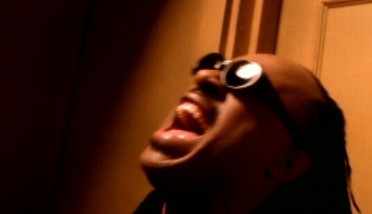
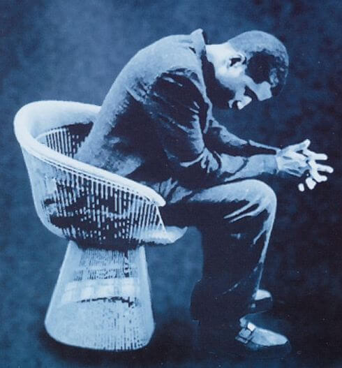

How Come, How Long

Los tiempos están cambiando..., ese es un estribillo repetido una y otra vez a lo largo de las últimas décadas. Pero por muy moderna y evolucionada que creamos se esté convirtiendo esta sociedad, hay actitudes y situaciones que contradicen esa creencia transportándonos a épocas primitivas y salvajes.
Las guerras, el racismo, el odio, la intolerancia, o los malos tratos, una y otra vez nos golpean y se aferran como una lapa a nuestra existencia cotidiana.
Está en nuestro poder cambiar esa anomalía del ser humano, corrigiéndola por medio de una educación desde edades muy tempranas. Pero también podemos utilizar la música, que además de ser una forma de comunicación de sentimientos y estados de ánimo, es también un modo de denuncia de situaciones injustas y perversas.
Stevie Wonder, junto a Babyface, utilizaron este método para denunciar la violencia de género que repetidamente se ejecuta principalmente contra las mujeres tanto en el tercer mundo, como en las "idílicas" sociedades más ricas y avanzadas.

Esta denuncia en forma de canción es How Come, How Long. Compuesta e interpretada por ellos, es un dueto de finales de la década de los años 90. Está basada en la historia real de Nicole Brown Simpson, y en ella nos narran la triste historia de maltrato a una mujer que finalmente fue asesinada por su pareja.
Una canción que, a pesar de tratar de algo tan crudo y repugnante, no deja de estar repleta de hermosura y belleza. La canción fue nominada a los premios Grammy como mejor canción colaboración pop, y en el video podemos ver una versión acústica de la canción denunciando e implorando una sociedad más justa y solidaria. En nuestras manos está poner ese granito de arena para conseguirlo.

How Come, How Long
There was a girl I used to know
She was oh so beautiful
But she's not here anymore
She had a college degree
Smart as anyone could be
She had so much to live for
But she fell in love
With the wrong kinda man
He abused her love and treated her so bad
There was not enough education in her world
That could save the life of this little girl
Una vez conocí a una chica
-era tan hermosa-
pero ya no está entre nosotros
Tenía una carrera universitaria
Lista como ninguna
Tenía muchos motivos por los que vivir
Hasta que se enamoró
del hombre equivocado
Abusó de su amor y la trató mal
Tanta educación aprendida en su vida
y no le sirvió para salvarse
How come, how long
It's not right, it's so wrong
Do we let it just go on
Turn our backs and carry on
Wake up, for it's too late
Right now, we can't wait
She won't have a second try
Open up your hearts
As well as your eyes
¿Por qué? ¿Hasta cuándo?
No es justo, es tan injusto
Dejamos que siga ocurriendo
Y le damos la espalda
Despertad, antes de que sea demasiado tarde
Ahora mismo, no podemos esperar más
Ella no tendrá una segunda oportunidad
Abrir los corazones y los ojos
She tried to give a cry for help
She even blamed things on herself
But no one came to her aid
Nothing was wrong as far as we could tell
That's what we'd like to tell ourselves
But no, it wasn't that way
So she fell in love
With the wrong kinda man
And she paid with her life
For loving that man
So we cannot ignore
We must look for the signs
And maybe next time
We might save somebody's life
Intentó pedir ayuda
Incluso se echó la culpa a sí misma
Pero nadie acudió en su ayuda
"Todo era aparentemente normal"
Es la excusa que nos ponemos a nosotros mismos
Pero no, no era así
Se enamoró
del hombre equivocado
Y pagó con su vida
por amar a ese hombre
No podemos ignorarlo
Debemos interpretar las señales
Y así quizás la próxima vez
logremos salvar una vida
How come, how long
It's not right, it's so wrong
Do we let it just go on
Turn our backs and carry on
Wake up, for it's too late
Right now, we can't wait
She won't have a second try
Open up your hearts
As well as your eyes
¿Por qué? ¿Hasta cuándo?
No es justo, es tan injusto
Dejamos que siga ocurriendo
Y le damos la espalda
Despertad, antes de que sea demasiado tarde
Ahora mismo, no podemos esperar más
Ella no tendrá una segunda oportunidad
Abrir los corazones y los ojos
I on occasion met that guy
He stirred up bad feelings deep inside
Something about him wasn't right
The way he proves himself a man
By beatin' his woman with his hands
Oh I wish she'd seen the light
How can someone like that
Call himself a man
In reality he's far more less than that
And we cannot ignore
Whenever we see the signs
'cause any kinda of abuse
God knows isn't right
Una vez conocí a ese tipo
Sólo tenía malos sentimientos
Había algo en él que no estaba bien
Esa forma de demostrarse a sí mismo que era muy hombre
Golpeando a su mujer con sus propias manos
Ojala que ella hubiera visto la luz
¿Cómo puede alguien así
llamarse hombre?
En realidad es mucho menos que eso
Y no podemos ignorar
cada vez que veamos alguna señal
porque ningún tipo de abuso
tiene justificación
How come, how long
It's not right, it's so wrong
Do we let it just go on
Turn our backs and carry on
Wake up, for it's too late
Right now, we can't wait
She won't have a second try
Open up your hearts
As well as your eyes
¿Por qué? ¿Hasta cuándo?
No es justo, es tan injusto
Dejamos que siga ocurriendo
Y le damos la espalda
Despertad, antes de que sea demasiado tarde
Ahora mismo, no podemos esperar más
Ella no tendrá una segunda oportunidad
Abrir los corazones y los ojos
Inicio |
Biografía |
Discografía |
Videos |
Letras |
Grammys |
Top ten
steviewonder.es ® is a registered trademark. All content © 2008-2022 by izugarria.
Todos los contenidos del portal incluyendo, imágenes, vídeo, nombres, marcas y logos, son propiedad de sus respectivos dueños.